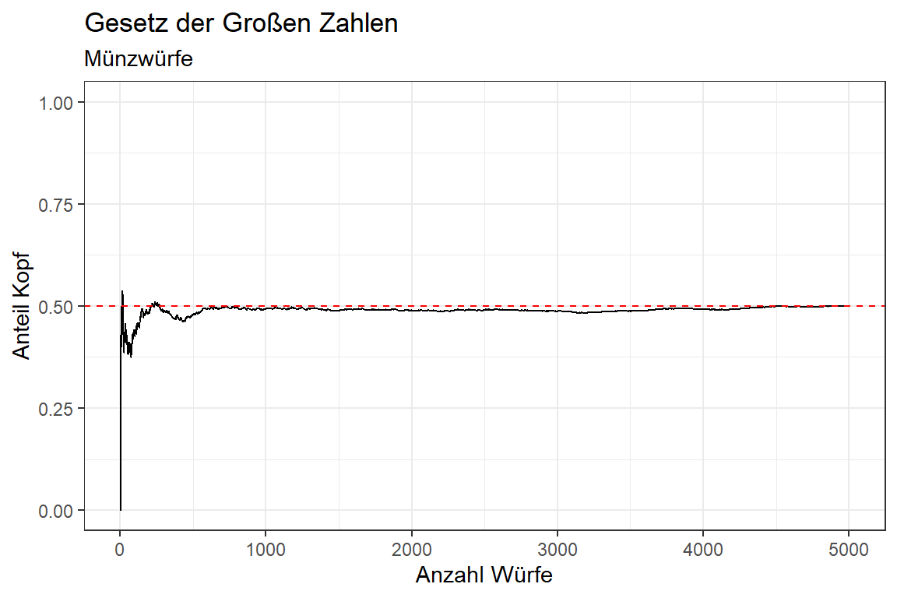

11 Funktionen, Loops, Apply
Dieses Kapitel gibt eine kurze Einführung in drei fortgeschrittene Konzepte der R-Programmierung: Das Schreiben eigener Funktionen sowie die Anwendung Loops (Schleifen) und Apply-Funktionen. Diese Konzepte sind nicht zwingend notwendig, um grundlegende Datenanalysen in R durchzuführen — die in den vorherigen Kapiteln behandelten tidyverse-Funktionen decken den Großteil typischer Anwendungsfälle bereits ab. Sie werden jedoch relevant, sobald Analysen wiederholt auf unterschiedliche Datensätze, Variablen oder Modelle angewendet werden sollen, oder wenn bestehende Funktionen für spezifische Anforderungen angepasst werden müssen. Für eine vertiefte Auseinandersetzung mit diesen Themen empfehlen wir das frei zugängliche Lehrbuch Advanced R von Hadley Wickham.
Wie zuvor greifen wir auch hier auf Funktionen aus dem tidyverse Package zurück:
11.1 Funktionen
Funktionen sind das grundlegende Bauprinzip von R — alle Befehle, die wir bisher verwendet haben, sind im Kern Funktionen. Eigene Funktionen zu schreiben lohnt sich immer dann, wenn dieselbe Operation mehrmals im Code vorkommt und kein dezidiertes Package zur Verfügung steht. Anstatt denselben Code-Block zu wiederholen, kapseln wir ihn in einer Funktion, vergeben einen sprechenden Namen und können ihn fortan mit einem einzigen Aufruf ausführen. Das macht den Code kürzer, lesbarer und weniger fehleranfällig — Korrekturen müssen nur an einer einzigen Stelle vorgenommen werden.
Eine Funktion wird in R mit function() definiert und einer Variable zugewiesen. Die Argumente der Funktion werden in den runden Klammern angegeben, der Funktionskörper in geschweiften Klammern. Der Rückgabewert ist per Default das Ergebnis des letzten Ausdrucks im Funktionskörper — alternativ kann er mit return() explizit angegeben werden.
Wir können uns etwa eine Funktion schreiben, welche Fahrenheit-Temperaturen in Grad Celcius umrechnet:
fht_zu_cel <- function(fht) {
(fht - 32) * 5/9
}
fht_zu_cel(c(32, 72, 98.6, 212))
#> [1] 0.00000 22.22222 37.00000 100.00000Funktionen können mehrere Argumente entgegennehmen, für die auch Standardwerte (default values) definiert werden können. Wird ein Argument beim Aufruf nicht angegeben, wird der Standardwert verwendet:
11.2 Loops
Loops (Schleifen) ermöglichen es, einen Code-Block wiederholt auszuführen — etwa für jedes Element eines Vektors, jede Spalte eines Datensatzes oder jede Datei in einem Ordner. Der in R am häufigsten verwendete Loop-Typ ist der for-Loop, der eine Sequenz von Werten durchläuft und für jeden Wert den Code-Block im Schleifenkörper ausführt.
11.2.1 for-Loops
Die Syntax eines for-Loops lautet for (variable in sequenz) { ... }. Die variable nimmt dabei nacheinander jeden Wert der sequenz an. So können wir uns etwa das Gesetz der Großen Zahlen für einen Münzwurf illustrieren, in dem wir uns das Outcome von 5000 Münzwürfen ausgeben und auf Basis dessen den Kopf-Anteil über die vergangenen n Würfe berechnen. Die Ergebnisse des Loops können wir dabei in einem vorab erstellten Objekte abspeichern:
wurf_max <- 5000
out <- tibble(
wurf_n = 1:wurf_max,
kopf = NA,
anteil = NA
)
set.seed(123) # damit Sample-Ziehen replizierbar ist
for (wurf in 1:wurf_max) {
out$kopf[wurf] <- sample(0:1, size = 1)
out$anteil[wurf] <- sum(out$kopf[1:wurf]) / wurf
}
out
#> # A tibble: 5,000 × 3
#> wurf_n kopf anteil
#> <int> <int> <dbl>
#> 1 1 0 0
#> 2 2 0 0
#> 3 3 0 0
#> 4 4 1 0.25
#> 5 5 0 0.2
#> 6 6 1 0.333
#> # ℹ 4,994 more rowsMit ggplot können wir unsere Simulation visualisieren:
ggplot(
data = out,
mapping = aes(x = wurf_n, y = anteil)
) +
geom_line() +
geom_hline(yintercept = 0.5, color = "red", linetype = "dashed") +
labs(
x = "Anzahl Würfe",
y = "Anteil Kopf",
title = "Gesetz der Großen Zahlen",
subtitle = "Münzwürfe"
) +
scale_y_continuous(limits = c(0, 1), breaks = c(0, .25, 0.5, .75, 1)) +
theme_bw()
11.2.2 while-Loops
Der while-Loop führt einen Code-Block so lange aus, wie eine Bedingung erfüllt ist. Er wird seltener verwendet als for-Loops, eignet sich aber für Situationen, in denen die Anzahl der Iterationen vorab nicht bekannt ist. Möchten wir uns etwa berechnen, nach wievielen Termen der Folge \(1 + \frac{1}{2} + + \frac{1}{3} + ... > 3\) ist:
11.3 apply-Funktionen
Eine in R häufig bevorzugte Alternative zu for-Loops sind die apply-Funktionen aus Base R sowie die map-Funktionen aus dem purrr-Package (Teil von tidyverse). Sie wenden eine Funktion auf alle Elemente eines Vektors, einer Liste oder eines Datensatzes an und sind oft kompakter und lesbarer als ein äquivalenter for-Loop. Außerdem sind apply-Funktionen in manchen Situationen schneller als for-Loops, da sie intern optimiert sind — bei modernen R-Versionen und typischen Datenmengen ist dieser Unterschied in der Praxis aber meist vernachlässigbar.
Die wichtigsten apply-Funktionen aus Base R:
-
sapply(): Wendet eine Funktion auf jedes Element eines Vektors oder einer Liste an und gibt — wenn möglich — einen vereinfachten Vektor oder eine Matrix zurück. -
lapply(): Wiesapply(), gibt aber immer eine Liste zurück — nützlich, wenn die Ergebnisse unterschiedliche Längen oder Typen haben. -
apply(): Wendet eine Funktion auf Zeilen (MARGIN = 1) oder Spalten (MARGIN = 2) einer Matrix oder eines Datensatzes an.
# sapply: Spaltensummen einer Matrix
m <- matrix(1:12, nrow = 3)
sapply(1:ncol(m), \(j) sum(m[, j]))
#> [1] 6 15 24 33
# lapply: Quadratwurzel für mehrere Vektoren, Ergebnis als Liste
vektoren <- list(a = c(4, 9, 16), b = c(25, 36), c = c(1, 49, 81, 100))
lapply(vektoren, sqrt)
#> $a
#> [1] 2 3 4
#>
#> $b
#> [1] 5 6
#>
#> $c
#> [1] 1 7 9 10
# apply: Zeilenmittelwerte einer Matrix
apply(m, MARGIN = 1, FUN = mean)
#> [1] 5.5 6.5 7.5
11.3.1 map-Funktionen aus purrr
Das in tidyverse enthaltene purrr-Package bietet mit den map-Funktionen eine tidyverse-konforme Alternative zu lapply() und sapply(), die sich besser in Pipe-basierte Workflows integriert und konsistentere Rückgabetypen liefert. map() gibt immer eine Liste zurück, während map_dbl(), map_chr() und map_df() direkt einen Vektor des jeweiligen Typs bzw. einen Datensatz zurückgeben:
set.seed(123)
verteilungen <- list(
gleichverteilt = runif(1000, min = 0, max = 10),
normalverteilt = rnorm(1000, mean = 5, sd = 1),
rechtsschief = rexp(1000, rate = 0.5)
)
# map_dbl: Mittelwert für jede Verteilung
verteilungen |>
map_dbl(mean)
#> gleichverteilt normalverteilt rechtsschief
#> 4.972778 5.011933 2.006794
# map_df: Quantile aller Verteilungen als Datensatz
verteilungen |>
map_df(
\(x) tibble(
q25 = quantile(x, 0.25),
median = median(x),
q75 = quantile(x, 0.75)
),
.id = "verteilung"
)
#> # A tibble: 3 × 4
#> verteilung q25 median q75
#> <chr> <dbl> <dbl> <dbl>
#> 1 gleichverteilt 2.54 4.90 7.47
#> 2 normalverteilt 4.31 5.03 5.66
#> 3 rechtsschief 0.549 1.35 2.76apply/map?
Für einfache Iterationen über Vektoren oder Listen sind sapply()/map_*() meist nicht nur die kompaktere und lesbarere Wahl, sondern oft auch effizienter. for-Loops sind hingegen besser geeignet, wenn die Iterationen voneinander abhängen (etwa wenn das Ergebnis einer Iteration als Input der nächsten dient), oder wenn komplexere Ablaufsteuerung mit break oder next benötigt wird. In der Praxis ist die Wahl oft auch eine Frage des persönlichen Stils — wichtiger als die Wahl zwischen Loop und apply ist, dass der Code klar und nachvollziehbar bleibt.